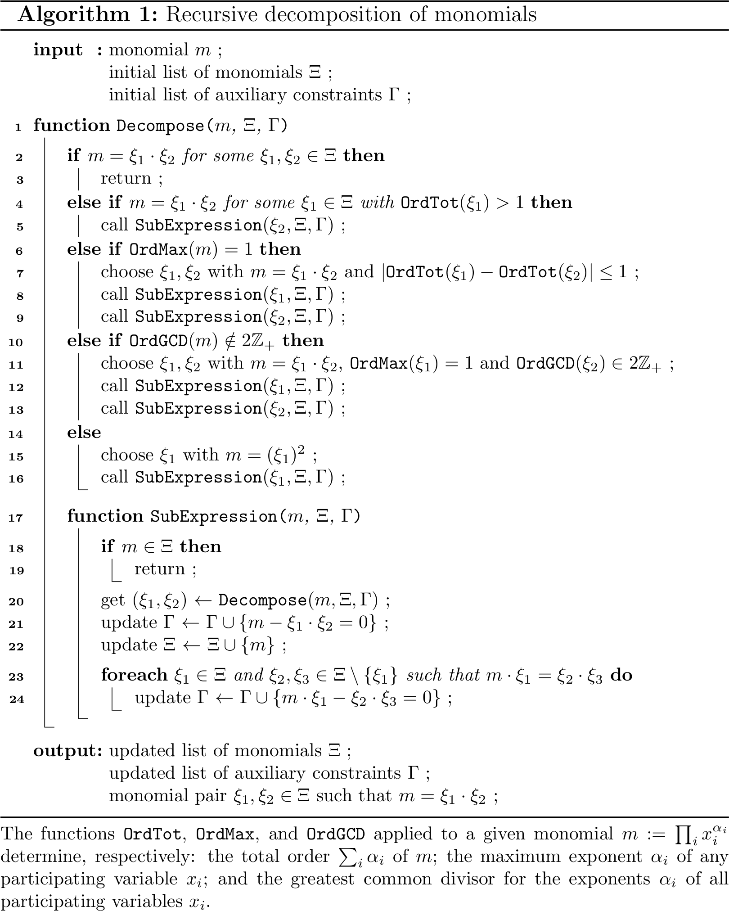

- Generated on for MC++ by
 1.15.0
1.15.0
|
MC++
|
The class mc::SQuad defined in squad.hpp enables the reformulation of sparse multivariate polynomials into a set of quadratic forms via the introduction of auxiliary variables [Shor, 1987; Manousiouthakis & Sourlas, 1992; Rumschinski et al., 2010]
Consider the following sparse multivariate polynomials:
\begin{align*}p_i(\mathbf{x}) :=\ & \sum_{j=1}^{J_i} a_{i,j} m_{i,j}(\mathbf{x}),\ \ i=1,\ldots, I\\ \text{with}\ m_{i,j}(\mathbf{x}) :=\ & x_1^{\alpha_{i,j,1}}\cdots x_{n_x}^{\alpha_{i,j,n_x}},\ \ j = 1,\ldots,J_i \end{align*}
with coefficients \(a_{i,j} \in \mathbb{R}\) and exponents \(\alpha_{i,j,k}\in\mathbb{Z}^+\). The reformulation entails the construction of a list \(\Xi\) of monomials in the variables \(\mathbf{x}\), with the following properties [Rumschinski et al., 2010]:
From Property 1, any polynomial function \(p_i\) can be rewritten into quadratic form as:
\begin{align*}p_i(\mathbf{x},\mathbf{y}) =\ & \boldsymbol{\xi}^\intercal \mathbf{Q}_i \boldsymbol{\xi},\ i = 0,\ldots,n_{\rm t} \label{eq:mainqf} \end{align*}
where the variable vectors \(\boldsymbol{\xi}\) correspond to the elements of the list \(\Xi\); and \(\mathbf{Q}_i\in\mathbb{S}_+^{n_\xi}\) are suitable real symmetric matrices with \(n_\xi=|\Xi|\).
From Property 2, decomposing the elements in \(\Xi\) with degree higher than 1 into products of lower-order monomials also in \(\Xi\) gives rise to auxiliary quadratic constraints:
\begin{align*}\boldsymbol{\xi}^\intercal \mathbf{A}_i \boldsymbol{\xi} = 0,\ i = 0,\ldots,n_{\rm a} \label{eq:auxqf} \end{align*}
for suitable real symmetric matrices \(\mathbf{A}_i\in\mathbb{S}_+^{n_\xi}\).
 "/> |
The decomposition procedure implemented in mc::SQuad consists of the recursive application of Algorithm 1 to each monomial term \(m\) in any polynomial functions \(p_i\), starting with \(1\) and any participating variables as the list \(\Xi\). The monomials are processed either in increasing or decreasing order, using the graded lexicographic order (grlex) of monomials by default. The function Decompose proceeds by decomposing a monomial \(m\) into the monomial product \(\xi_1\cdot\xi_2\), and keeps processing the monomial factors \(\xi_1\) and \(\xi_2\) until they or their own factors are all found in the monomial set \(\Xi\). The latter set is grown dynamically in the function SubExpression by appending any factor \(\xi_1\) or \(\xi_2\) not initially present (line 22), and so is the set \(\Gamma\) of auxiliary quadratic constraints (line 21) so the quadratization is exact.
Optionally, extra quadratic equality constraints may be generated between each newly inserted monomials and other monomials in \(\Xi\) (lines 23-24). These constraints arise due to multiple possible decompositions of higher-order monomials in terms of existing factors in \(\Xi\) and are structurally redundant in the sense that the quadratization remains exact without them. Such redundant constraints may strengthen a QCP relaxation of a polynomial optimization program since they do not add extra auxiliary variables [Liberti & Pantelides, 2006; Ruiz & Grossmann, 2011]. However, they introduce new bilinear or square terms in the QCP relaxation which reduce its sparsity as a result.
Algorithm 1 starts by testing if \(m\) can be decomposed in terms of monomials that are already present in \(\Xi\) (line 2), in an attempt to reducing the number of auxiliary variables and constraints in the reformulation. Several such decompositions may be possible, in which case preference is given to the trivial decomposition \(1\cdot m\) if \(m\in\Xi\); otherwise, a decomposition \(\xi_1\cdot\xi_2=m\) is chosen whereby \(\xi_1\) and \(\xi_2\) are as close as possible in the grlex order. Failing this, the algorithm tests if part of \(m\) comprise an existing monomial \(\xi_1\in\Xi\) with total degree greater than one, with ties broken in favor of larger monomial in grlex order (line 4). The other factor \(\xi_2\) is further decomposed, as necessary (line 5). If no such decompositions are possible for the current list \(\Xi\) yet \(m\) is multilinear (line 6), a decomposition is chosen whereby \(\xi_1\) and \(\xi_2\) are as close as possible in the grlex sense (line 7), then both \(\xi_1\) and \(\xi_2\) are further processed. In case \(m\) is not multilinear but contains one or more variables with odd degree (line 10), it is split into a multilinear term — which is further processed as earlier — and a monomial where all the variable degrees are even (line 11). This latter type of monomials are simply processed as square terms (line 15).
For illustration, consider the problem to quadratize the following polynomials:
\begin{align*} p_0(x_0,x_1,x_2) :=\ & \left(x_0+x_1^2-2 x_2\right)^3\\ p_1(x_1) :=\ & 2 x_1^2-1 \end{align*}
It is convenient to leverage MC++'s sparse polynomial class in spoly.hpp
to help construct the polynomials in the desired format:
The last three line display the resulting sparse polynomial expressions, here adopting a monomial basis representation:
Sparse multivariate polynomials:
1.0000000e+00 3 [0]^3
-6.0000000e+00 3 [0]^2·[2]
1.2000000e+01 3 [0]·[2]^2
-8.0000000e+00 3 [2]^3
3.0000000e+00 4 [0]^2·[1]^2
-1.2000000e+01 4 [0]·[1]^2·[2]
1.2000000e+01 4 [1]^2·[2]^2
3.0000000e+00 5 [0]·[1]^4
-6.0000000e+00 5 [1]^4·[2]
1.0000000e+00 6 [1]^6
R = [ 0.0000000e+00, 0.0000000e+00]
B = [-2.7000000e+01, 6.4000000e+01]
I = { 0 1 2 }
-1.0000000e+00 0 1
2.0000000e+00 2 [1]^2
R = [ 0.0000000e+00, 0.0000000e+00]
B = [-1.0000000e+00, 1.0000000e+00]
I = { 1 }
The quadratization requires the header file squad.hpp to be included:
An environment mc::SQuad is defined and the sparse multivariate polynomials are quadratized by calling the method mc::SQuad::process for each sparse polynomial. This method takes a coefficient map (or an array of maps) as argument, which is of type std::map<mc::SMon,double,mc::lt_SMon> where the class mc::SMon is used to store and manipulate sparse monomials and mc::lt_SMon implements the grlex order:
By default, the quadratization expects polynomials in monomial basis, the monomials are processed in decreased grlex order, and no redundant constraints are appended (see What are the options in mc::SQuad and how do I set them?). The final line displays the equivalent quadratic forms:
Sparse quadratic forms:
12 Monomials: [ 1 [0] [1] [2] [0]^2 [0]·[1] [0]·[2] [1]^2 [1]·[2] [2]^2 [1]^3 [1]^4 ]
Quadratic form for P[0]:
1.00000e+00 ( [0] ; [0]^2 )
-6.00000e+00 ( [0] ; [0]·[2] )
1.20000e+01 ( [0] ; [2]^2 )
3.00000e+00 ( [0] ; [1]^4 )
-8.00000e+00 ( [2] ; [2]^2 )
-6.00000e+00 ( [2] ; [1]^4 )
3.00000e+00 ( [0]·[1] ; [0]·[1] )
-1.20000e+01 ( [0]·[2] ; [1]^2 )
1.20000e+01 ( [1]·[2] ; [1]·[2] )
1.00000e+00 ( [1]^3 ; [1]^3 )
Quadratic form for P[1]:
-1.00000e+00 ( 1 ; 1 )
2.00000e+00 ( 1 ; [1]^2 )
Auxiliary quadratic form #1:
-1.00000e+00 ( 1 ; [1]^2 )
1.00000e+00 ( [1] ; [1] )
Auxiliary quadratic form #2:
-1.00000e+00 ( 1 ; [1]^3 )
1.00000e+00 ( [1] ; [1]^2 )
Auxiliary quadratic form #3:
-1.00000e+00 ( 1 ; [1]^4 )
1.00000e+00 ( [1] ; [1]^3 )
Auxiliary quadratic form #4:
-1.00000e+00 ( 1 ; [1]·[2] )
1.00000e+00 ( [1] ; [2] )
Auxiliary quadratic form #5:
-1.00000e+00 ( 1 ; [0]·[2] )
1.00000e+00 ( [0] ; [2] )
Auxiliary quadratic form #6:
-1.00000e+00 ( 1 ; [0]·[1] )
1.00000e+00 ( [0] ; [1] )
Auxiliary quadratic form #7:
-1.00000e+00 ( 1 ; [2]^2 )
1.00000e+00 ( [2] ; [2] )
Auxiliary quadratic form #8:
-1.00000e+00 ( 1 ; [0]^2 )
1.00000e+00 ( [0] ; [0] )
These results show that a total of 12 monomials participate in the quadratic forms: The constant monomial \(\xi_0=1\); the participating variables \(\xi_1:=x_0\), \(\xi_2:=x_1\), \(\xi_3=x_2\); and 8 lifted monomials \(x_4:=x_0^2\), \(\xi_5:=x_0\cdot x_1\), \(\xi_6:=x_0\cdot x_2\), \(\xi_7:=x_1^2\), \(\xi_8:=x_1\cdot x_2\), \(\xi_9:=x_2^2\), \(\xi_{10}:=x_1^3\), \(\xi_{11}:=x_1^4\). A reformulation of the polynomials \(p_0,p_1\) in terms of these monomials is given by:
\begin{align*} q_0(\xi_0,\ldots,\xi_{11}) =\ & \xi_1\cdot \xi_4 - 6 \xi_1\cdot \xi_6 + 12 \xi_1\cdot \xi_9 + 3 \xi_1\cdot \xi_{11} - 8 \xi_3\cdot \xi_9 - 6 \xi_3\cdot \xi_{11} + 3 \xi_5^2 - 12 \xi_6\cdot \xi_7 + 12 \xi_8^2 + \xi_{10}^2\\ q_1(\xi_0,\ldots,\xi_{11}) =\ & - \xi_0^2 + 2 \xi_0\cdot\xi_7 \end{align*}
with the following 8 auxiliary quadratic constraints are also generated:
\begin{align*} \xi_1^2 - \xi_0\cdot\xi_4 =\ & 0\\ \xi_1\cdot\xi_2 - \xi_0\cdot\xi_5 =\ & 0\\ \xi_1\cdot\xi_3 - \xi_0\cdot\xi_6 =\ & 0\\ \xi_2^2 - \xi_0\cdot\xi_7 =\ & 0\\ \xi_2\cdot\xi_3 - \xi_0\cdot\xi_8 =\ & 0\\ \xi_3^2 - \xi_0\cdot\xi_9 =\ & 0\\ \xi_2\cdot\xi_7 - \xi_0\cdot\xi_{10} =\ & 0\\ \xi_2\cdot\xi_{10} - \xi_0\cdot\xi_{11} =\ & 0\\ \end{align*}
With the redundant constraint option activated before the quadratization:
the final display changes to:
Sparse quadratic forms:
12 Monomials: [ 1 [0] [1] [2] [0]^2 [0]·[1] [0]·[2] [1]^2 [1]·[2] [2]^2 [1]^3 [1]^4 ]
Quadratic form for P[0]:
1.00000e+00 ( [0] ; [0]^2 )
-6.00000e+00 ( [0] ; [0]·[2] )
1.20000e+01 ( [0] ; [2]^2 )
3.00000e+00 ( [0] ; [1]^4 )
-8.00000e+00 ( [2] ; [2]^2 )
-6.00000e+00 ( [2] ; [1]^4 )
3.00000e+00 ( [0]·[1] ; [0]·[1] )
-1.20000e+01 ( [0]·[2] ; [1]^2 )
1.20000e+01 ( [1]·[2] ; [1]·[2] )
1.00000e+00 ( [1]^3 ; [1]^3 )
Quadratic form for P[1]:
-1.00000e+00 ( 1 ; 1 )
2.00000e+00 ( 1 ; [1]^2 )
Auxiliary quadratic form #1:
-1.00000e+00 ( 1 ; [1]^2 )
1.00000e+00 ( [1] ; [1] )
Auxiliary quadratic form #2:
-1.00000e+00 ( 1 ; [1]^3 )
1.00000e+00 ( [1] ; [1]^2 )
Auxiliary quadratic form #3:
-1.00000e+00 ( [1] ; [1]^3 )
1.00000e+00 ( [1]^2 ; [1]^2 )
Auxiliary quadratic form #4:
-1.00000e+00 ( 1 ; [1]^4 )
1.00000e+00 ( [1] ; [1]^3 )
Auxiliary quadratic form #5:
-1.00000e+00 ( [1] ; [1]^4 )
1.00000e+00 ( [1]^2 ; [1]^3 )
Auxiliary quadratic form #6:
-1.00000e+00 ( [1]^2 ; [1]^4 )
1.00000e+00 ( [1]^3 ; [1]^3 )
Auxiliary quadratic form #7:
-1.00000e+00 ( 1 ; [1]·[2] )
1.00000e+00 ( [1] ; [2] )
Auxiliary quadratic form #8:
-1.00000e+00 ( [1] ; [1]·[2] )
1.00000e+00 ( [2] ; [1]^2 )
Auxiliary quadratic form #9:
1.00000e+00 ( [2] ; [1]^3 )
-1.00000e+00 ( [1]^2 ; [1]·[2] )
Auxiliary quadratic form #10:
1.00000e+00 ( [2] ; [1]^4 )
-1.00000e+00 ( [1]·[2] ; [1]^3 )
Auxiliary quadratic form #11:
-1.00000e+00 ( 1 ; [0]·[2] )
1.00000e+00 ( [0] ; [2] )
Auxiliary quadratic form #12:
1.00000e+00 ( [0] ; [1]·[2] )
-1.00000e+00 ( [1] ; [0]·[2] )
Auxiliary quadratic form #13:
-1.00000e+00 ( 1 ; [0]·[1] )
1.00000e+00 ( [0] ; [1] )
Auxiliary quadratic form #14:
1.00000e+00 ( [0] ; [1]^2 )
-1.00000e+00 ( [1] ; [0]·[1] )
Auxiliary quadratic form #15:
1.00000e+00 ( [1] ; [0]·[2] )
-1.00000e+00 ( [2] ; [0]·[1] )
Auxiliary quadratic form #16:
1.00000e+00 ( [0] ; [1]·[2] )
-1.00000e+00 ( [2] ; [0]·[1] )
Auxiliary quadratic form #17:
1.00000e+00 ( [0] ; [1]^3 )
-1.00000e+00 ( [0]·[1] ; [1]^2 )
Auxiliary quadratic form #18:
1.00000e+00 ( [0] ; [1]^4 )
-1.00000e+00 ( [0]·[1] ; [1]^3 )
Auxiliary quadratic form #19:
-1.00000e+00 ( 1 ; [2]^2 )
1.00000e+00 ( [2] ; [2] )
Auxiliary quadratic form #20:
-1.00000e+00 ( [0] ; [2]^2 )
1.00000e+00 ( [2] ; [0]·[2] )
Auxiliary quadratic form #21:
-1.00000e+00 ( [1] ; [2]^2 )
1.00000e+00 ( [2] ; [1]·[2] )
Auxiliary quadratic form #22:
-1.00000e+00 ( [0]·[1] ; [2]^2 )
1.00000e+00 ( [0]·[2] ; [1]·[2] )
Auxiliary quadratic form #23:
-1.00000e+00 ( [1]^2 ; [2]^2 )
1.00000e+00 ( [1]·[2] ; [1]·[2] )
Auxiliary quadratic form #24:
-1.00000e+00 ( 1 ; [0]^2 )
1.00000e+00 ( [0] ; [0] )
Auxiliary quadratic form #25:
1.00000e+00 ( [0] ; [0]·[1] )
-1.00000e+00 ( [1] ; [0]^2 )
Auxiliary quadratic form #26:
1.00000e+00 ( [0] ; [0]·[2] )
-1.00000e+00 ( [2] ; [0]^2 )
The quadratization still introduces 12 monomials but 26 auxiliary quadratic constraints are now identified, including the following 18 redundant quadratic constraints:
\begin{align*} \xi_7^2 - \xi_2\cdot\xi_{10} =\ & 0\\ \xi_7\cdot\xi_{10} - \xi_2\cdot\xi_{11} =\ & 0\\ \xi_{10}^2 - \xi_7\cdot\xi_{11} =\ & 0\\ \xi_2\cdot\xi_8 - \xi_3\cdot\xi_7 =\ & 0\\ \xi_3\cdot\xi_{10} - \xi_7\cdot\xi_8 =\ & 0\\ \xi_3\cdot\xi_{11} - \xi_8\cdot\xi_{10} =\ & 0\\ \xi_1\cdot\xi_8 - \xi_2\cdot\xi_6 =\ & 0\\ \xi_1\cdot\xi_7 - \xi_2\cdot\xi_5 =\ & 0\\ \xi_2\cdot\xi_6 - \xi_3\cdot\xi_5 =\ & 0\\ \xi_1\cdot\xi_8 - \xi_3\cdot\xi_5 =\ & 0\\ \xi_5\cdot\xi_7 - \xi_1\cdot\xi_{10} =\ & 0\\ \xi_5\cdot\xi_{10} - \xi_1\cdot\xi_{11} =\ & 0\\ \xi_3\cdot\xi_6 - \xi_1\cdot\xi_9 =\ & 0\\ \xi_3\cdot\xi_8 - \xi_2\cdot\xi_9 =\ & 0\\ \xi_6\cdot\xi_8 - \xi_5\cdot\xi_9 =\ & 0\\ \xi_8^2 - \xi_7\cdot\xi_9 =\ & 0\\ \xi_1\cdot\xi_5 - \xi_2\cdot\xi_4 =\ & 0\\ \xi_1\cdot\xi_6 - \xi_3\cdot\xi_4 =\ & 0\\ \end{align*}
The quadratization may also be performed in Chebyshev basis instead of the default monomial basis. And the monomials may be processed in increasing grlex order rather than the default decreasing grlex order.
Pointers of type mc::SMon to the monomials participating in the quadratic forms can be retrieved with the method mc::SQuad::SetMon, which is of type std::set<SMon const*,lt_pSMon>.
The sparse coefficient matrices defining the main quadratic forms for each processed multivariate polynomial and the corresponding auxiliary quadratic constraints can be retrieved with the methods mc::SQuad::MatFct and mc::SQuad::MatRed, respectively. These coefficient matrices are of the type std::map<std::pair<SMon const*,SMon const*>,double,lt_SQuad> where the comparison operator mc::lt_SQuad orders monomial pairs in grlex order for both elements.
Having decomposed a set of multivariate polynomials into quadratic forms using Algorithm 1, one may seek to further improve the decomposition by minimizing the number of auxiliary variables needed. Altough computing such a minimal decomposition is NP-hard in general, it can be automated using mixed-integer programming (MIP) and may be tractable for simple multivariate polynomials. The MIP model implemented in class mc::SQuad is the following:
\begin{align*}\displaystyle\min_{\boldsymbol{z},\boldsymbol{\nu}^{\rm L},\boldsymbol{\nu}^{\rm R},\boldsymbol{\beta},\boldsymbol{\omega}^{\rm L},\boldsymbol{\omega}^{\rm R}}\ & \sum_{k=1}^{n_a} z_k\\ \displaystyle\text{s.t.}\ \ \ & \sum_{i=1}^{n_x+k-1} \nu^{\rm L}_{k,i} = z_k,\ \ k=1\ldots n_a\\ & \sum_{i=1}^{n_x+k-1} \nu^{\rm R}_{k,i} = z_k,\ \ k=1\ldots n_a\\ & \sum_{i=1}^{n_x+n_a} \omega^{\rm L}_{j,i} = 1,\ \ j=1\ldots n_m\\ & \sum_{i=1}^{n_x+n_a} \omega^{\rm R}_{j,i} \leq 1,\ \ j=1\ldots n_m\\ & \omega^{\rm L}_{j,k} \leq z_k,\ \ j=1\ldots n_m,\ \ k=1\ldots n_a\\ & \omega^{\rm R}_{j,k} \leq z_k,\ \ j=1\ldots n_m,\ \ k=1\ldots n_a\\ & \beta_{k,i} = \nu^{\rm L}_{k,i} + \nu^{\rm R}_{k,i} + \sum_{l=1}^{k-1} \left(\nu^{\rm L}_{k,n_x+l} + \nu^{\rm R}_{k,n_x+l}\right) \beta_{l,i},\ \ i=1\ldots n_x,\ \ k=1\ldots n_a\\ & \alpha_{j,i} = \omega^{\rm L}_{j,i} + \omega^{\rm R}_{j,i} + \sum_{l=1}^{n_a} \left(\omega^{\rm L}_{j,n_x+l} + \omega^{\rm R}_{j,n_x+l}\right) \beta_{l,i},\ \ i=1\ldots n_x,\ \ j=1\ldots n_m\\ & z_k, \nu^{\rm L}_{k,i}, \nu^{\rm R}_{k,i}, \omega^{\rm L}_{j,i}, \omega^{\rm R}_{j,i}\in\{0,1\},\ \beta_{k,i}\in[0,\max\{\alpha_{j,i}: j=1\ldots n_m\}],\ \ i=1\ldots n_x+n_a,\ \ j=1\ldots n_m,\ \ k=1\ldots n_a \end{align*}
where the following sets and variables are used:
The following symmetry breaking constraints may also be used to expedite convergence:
\begin{align*}& z_k \geq z_{k+1},\ \ k=1\ldots n_a-1\\[.5em] & \beta_{k,i} \leq z_k\ \max\{\alpha_{j,i}: j=1\ldots n_m\},\ \ i=1\ldots n_x,\ \ k=1\ldots n_a\\ & \sum_{i=1}^{n_x} \beta_{k,i} \leq \sum_{i=1}^{n_x} \beta_{k+1,i} + (1-z_{k+1})\left(\max\left\{\sum_{i=1}^{n_x}\alpha_{j,i}: j=1\ldots n_m\right\}-1\right),\ \ k=1\ldots n_a-1\\ & \sum_{i=1}^{n_x} \beta_{k,i} \leq \max\left\{\sum_{i=1}^{n_x}\alpha_{j,i}: j=1\ldots n_m\right\}-1\ \ k=1\ldots n_a-1\\[.5em] & (\overline{\nu}^{\rm L}_k-i)\, \nu^{\rm L}_{k,i} = 0,\ \ i=1\ldots n_x+k-1,\ \ k=1\ldots n_a\\ & (\overline{\nu}^{\rm U}_k-i)\, \nu^{\rm U}_{k,i} = 0,\ \ i=1\ldots n_x+k-1,\ \ k=1\ldots n_a\\ & \overline{\nu}^{\rm L}_k \leq \overline{\nu}^{\rm U}_k,\ \ k=1\ldots n_a\\ & \overline{\nu}^{\rm U}_k \leq \overline{\nu}^{\rm U}_{k+1},\ \ k=1\ldots n_a-1\\ & \overline{\nu}^{\rm L}_k \leq \overline{\nu}^{\rm L}_{k+1} - 1 + (n_x+k) (\overline{\nu}^{\rm U}_{k+1}-\overline{\nu}^{\rm U}_k),\ \ k=1\ldots n_a-1\\ & 0 \leq \overline{\nu}^{\rm L}_k, \overline{\nu}^{\rm U}_k \leq n_x+k-1,\ \ k=1\ldots n_a\\[.5em] & (\overline{\omega}^{\rm L}_j-i)\, \omega^{\rm L}_{j,i} = 0,\ \ i=1\ldots n_x+n_a,\ \ j=1\ldots n_m\\ & (\overline{\omega}^{\rm U}_j-i)\, \omega^{\rm U}_{j,i} = 0,\ \ i=1\ldots n_x+n_a,\ \ j=1\ldots n_m\\ & \overline{\omega}^{\rm L}_j \leq \overline{\omega}^{\rm U}_j,\ \ j=1\ldots n_m\\ & 0 \leq \overline{\omega}^{\rm L}_j, \overline{\omega}^{\rm U}_j \leq n_x+n_a,\ \ j=1\ldots n_m \end{align*}
where the following extra variables are used:
Continuing the illustrative example in the previous section, a minimal quadratic form is computed by calling the method mc::SQuad::optimize:
By default, this optimization may be warm-started with the heuristic decomposition obtained from the method mc::SQuad::process implementing Algorithm 1. In particular, the redundant constraints are ignored. The final line displays the minimal quadratic forms:
Sparse quadratic forms:
9 Monomials: [ 1 [0] [1] [2] [0]^2 [1]^2 [2]^2 [0]·[1]^2 [1]^4 ]
Quadratic form for P[0]:
1.00000e+00 ( [0] ; [0]^2 )
1.20000e+01 ( [0] ; [2]^2 )
3.00000e+00 ( [0] ; [0]·[1]^2 )
3.00000e+00 ( [0] ; [1]^4 )
-6.00000e+00 ( [2] ; [0]^2 )
-8.00000e+00 ( [2] ; [2]^2 )
-1.20000e+01 ( [2] ; [0]·[1]^2 )
-6.00000e+00 ( [2] ; [1]^4 )
1.20000e+01 ( [1]^2 ; [2]^2 )
1.00000e+00 ( [1]^2 ; [1]^4 )
Quadratic form for P[1]:
-1.00000e+00 ( 1 ; 1 )
2.00000e+00 ( [1] ; [1] )
Auxiliary quadratic form #1:
1.00000e+00 ( 1 ; [1]^2 )
-1.00000e+00 ( [1] ; [1] )
Auxiliary quadratic form #2:
1.00000e+00 ( 1 ; [0]·[1]^2 )
-1.00000e+00 ( [0] ; [1]^2 )
Auxiliary quadratic form #3:
1.00000e+00 ( 1 ; [2]^2 )
-1.00000e+00 ( [2] ; [2] )
Auxiliary quadratic form #4:
1.00000e+00 ( 1 ; [1]^4 )
-1.00000e+00 ( [1]^2 ; [1]^2 )
Auxiliary quadratic form #5:
1.00000e+00 ( 1 ; [0]^2 )
-1.00000e+00 ( [0] ; [0] )
These results, therfore, show that a minimum of 5 auxiliary variables only are needed to decompose the multivariate polynomials into quadratic forms: \(\xi_4:=x_0^2, \xi_5:=x_1^2, \xi_6:=x_2^2, \xi_7:=x_0\cdot x_1^2, \xi_8:=x_1^4\). The resulting decomposition is given by:
\begin{align*} q_0(\xi_0,\ldots,\xi_8) =\ & \xi_1\cdot\xi_4 + 12 \xi_1\cdot\xi_6 + 3 \xi_1\cdot\xi_7 + 3 \xi_1\cdot\xi_8 - 6 \xi_3\cdot\xi_4 - 8 \xi_3\cdot\xi_6 - 12 \xi_3\cdot\xi_7 - 6 \xi_3\cdot\xi_8 + 12 \xi_3 \xi_7 + 12 \xi_5\cdot\xi_6 + \xi_5\cdot\xi_8\\ q_1(\xi_0,\ldots,\xi_8) =\ & - \xi_0^2 + 2 \xi_2^2 \end{align*}
with the following 8 auxiliary quadratic constraints are also generated:
\begin{align*} \xi_0\cdot\xi_4 - \xi_1^2 =\ & 0\\ \xi_0\cdot\xi_5 - \xi_2^2 =\ & 0\\ \xi_0\cdot\xi_6 - \xi_3^2 =\ & 0\\ \xi_0\cdot\xi_7 - \xi_1\cdot\xi_5 =\ & 0\\ \xi_0\cdot\xi_8 - \xi_5^2 =\ & 0\\ \end{align*}
Note that this minimal decomposition is currently implemented for polynomials expressed in monomial basis only.
The public static class member mc::SQuad::options that can be used to set/modify the options; e.g.,
The available options are the following:
| Name | Type | Default | Description |
|---|---|---|---|
| mc::SQuad::Options::BASIS | int | mc::SQuad::Options::MONOM | Basis representation of the multivariate polynomial - mc::SQuad::Options::MONOM: monomial basis, mc::SQuad::Options::CHEB: Chebyshev basis |
| mc::SQuad::Options::ORDER | int | mc::SQuad::Options::DEC | Processing order for the monomial terms - mc::SQuad::Options::INC: increasing grlex monomial order, mc::SQuad::Options::DEC: decreasing grlex monomial order |
| mc::SQuad::Options::REDUC | bool | false | Whether to search for and append extra reduction constraints |
| mc::SQuad::Options::CHKTOL | double | 1e-10 | Tolerance for checking exactness of quadratic forms |
| mc::SQuad::Options::LPALGO | int | -1 | LP algorithm used by MIP solver |
| mc::SQuad::Options::LPPRESOLVE | int | -1 | LP presolve strategy in MIP solver |
| mc::SQuad::Options::LPFEASTOL | double | 1e-9 | Tolerance on LP feasibility in MIP solver |
| mc::SQuad::Options::LPOPTIMTOL | double | 1e-9 | Tolerance on LP optimality in MIP solver |
| mc::SQuad::Options::MIPRELGAP | double | 1e-7 | Tolerance on relative gap in MIP solver |
| mc::SQuad::Options::MIPABSGAP | double | 1e-7 | Tolerance on absolute gap in MIP solver |
| mc::SQuad::Options::MIPTHREADS | int | 0 | Number of threads used by MIP solver |
| mc::SQuad::Options::MIPCONCURRENT | int | 1 | Number of independent MIP solves in parallel |
| mc::SQuad::Options::MIPFOCUS | int | 0 | MIP high-level solution strategy |
| mc::SQuad::Options::MIPHEURISTICS | double | 0.2 | Fraction of time spent in MIP heuristics |
| mc::SQuad::Options::MIPDISPLEVEL | int | 1 | Display level for MIP solver |
| mc::SQuad::Options::MIPOUTPUTFILE | std::string | "" | Name of output file for MIP model |
| mc::SQuad::Options::MIPTIMELIMIT | double | 600 | Maximum MIP runtime (seconds) |
| mc::SQuad::Options::DISPLEN | unsigned int | 5 | Number of digits in output stream |
Errors are managed based on the exception handling mechanism of the C++ language. Each time an error is encountered, a class object of type mc::SQuad::Exceptions is thrown, which contains the type of error. It is the user's responsibility to test whether an exception was thrown during a quadratization, and then make the appropriate changes. Should an exception be thrown and not caught, the program will stop.
Possible errors encountered during quadratization of a multivariate polynomial are:
| Number | Description |
|---|---|
| -33 | Internal error |